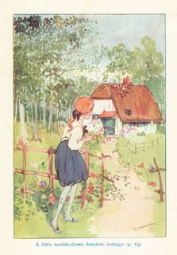
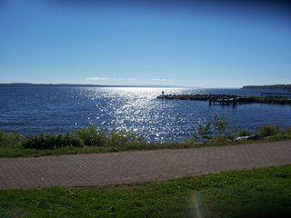

Illustration by CARNELIAN
Here I have attempted to log the non-manga/light novel books that I read, as well as put my thoughts and notes related to those books. This is primarily for my personal benefit and I'm mainly putting this on neocities because I can imbed all the images and whatnot in html (I also can use this as an opportunity to shill books I like, lol). Most of these books are available online for free on sites such as the Internet Archive/Open Library, Project Gutenberg, HathiTrust, and Google Books as they are in the public domain if you're interested in reading them. I've tried to hide any spoilers.
Boys' school stories page/annex
Playing Fields by Eric Parker - Novel, read 4/25/2023 - Currently reading | Just started, thoughts pending.
The Cardinal's Snuff-Box by Henry Harland - Novel, read 4/10/2025 - 4/23/2025 A lighthearted and easy-going romance about an English writer and an Anglo-Italian dutchess. Set during one summer in Italy's piedmont region during the late 1890s or early 1900s, The Cardinal's Snuff-Box is the story of an English writer who goes to Italy on a holiday only to discover that the landlady of the villa he is renting is the same woman whom he had met (and subsequently fallen in love with) several times in his European travels in years prior. It turns out that not only is she his landlady, but she’s also a duchess and the niece of a cardinal, the loss of whose titular snuff-box winds up playing a decisive role in the progression of their relationship. The just over 300 page long novel is leisurely paced and divided into twenty-eight relatively short episodic chapters. Most of the prose takes the form of believably written, lively dialogue, with the descriptive passages being succinct yet very vivid and communicative. Everyone in the small cast of characters is introduced and elaborated upon fairly quickly, and although well written, do clearly bear the stamp of their particular recognizable archetype. Nonetheless, the characters act and interact in a realistic manner despite some rather contrived events in the plot. The book contains twenty full page pen and ink illustrations by G. C. Wilmshurst with nearly every chapter in the book receiving one. Harland's best-known novel (though by now fairly obscure), The Cardinal's Snuff-Box was a bestseller upon its publication by John Lane in 1900 and sold 100,000 copies in 1900 and 1901 combined, and I can see why. The whole novel feels dreamy, quaint, and nostalgic, like a warm but not too warm summer's day. The Cardinal's Snuff-Box was a light and relaxing read.
The Anathemata: Fragments of an Attempted Writing by David Jones - Epic Poem, read 3/25/2025 - 4/7/2025 A symbolic epic poem about the cultural background of the British Isles. The Anathemata begins in the present day (which would have been the mid-twentieth century as it was first published in 1952) at a Catholic Mass and gradually spirals outwards to encompass the Matter of Wales, archeology, anthropology and the earliest recorded cultural expressions, the geography and toponymy of medieval and early modern England, Greco-Roman mythology, the Trojan War, the seafaring culture of the British Isles, and all coming back to a Christmas Eve service in the present day. The 248-page epic is divided into eight parts which are to some extent self-contained. However, the same motifs pervade the whole, intricately intertwining and, through its eclecticism, creating a unified work. Nearly every page of The Anathemata contains several footnotes (some of which are rather lengthy) which are necessary to understand the diverse allusions made throughout the poem (especially the more obscure ones) in addition to guiding the reader in the pronunciation of non-English words and phrases. While on the topic of language, the poem is primarily written in standard British English, however, Welsh, Cockney English, and Latin also play prominent roles. The book has been furnished with several nice full-page illustrations by the author himself printed in black and white. In conclusion The Anathemata is a fascinating if unconventional epic for the 20th century.
John Inglesant: A Romance by J. H. Shorthouse - Novel, read 2/2/2025 - 3/23/2025 A historical novel about the titular hero's life amid the political, social, and religious milieu and conflicts of mid-17th century Europe, and of his involvement in them. Presented as if it were the memoirs of an actual historical individual, John Inglesant follows the title hero from his formative years and education as a youth in the peaceful english countryside, to his time as a courtier at the court of Charles I in the turbulent years leading up to the First English Civil War, to his life abroad in France for a time with the English court in exile, until a personal mission lands him in Italy, and he is drawn into the intrigues and aristocratic and papal politics of Rome and even ends up influencing a papal conclave (despite still being a member of the Church of England), survives a plague, and participates in efforts to defend a popular Quietest religious revival against the hostility and pressures of the Jesuits and Roman Inquisition, and ends up back in England once more, albeit an England changed from the one he left all those years ago. The whole book is nearly 600 pages long and is divided into two volumes, the second being slightly longer than the first, per the first edition published by Macmillan and Co. in 1880. Despite political and ecclesiastical intrigue being the primary drivers of the plot, the book is more about the philosophies and ideas which dictate people's actions with regard to both spheres. John Inglesant is to be considered a philosophical romance of ideas, not a swashbuckler concerned with direct action, contrary to what its synopsis would initially suggest. With that considered, it would make sense that the novel is written in something of a ‘wordy’ style, even by the standards of the 1880s. The descriptions of the mundane can grow tedious at times, but the advantage of the novel's prose style is that it clearly communicates to the reader the more abstract ideas that are really at the heart of the book. The second volume contains many illustrative and lively descriptions of Roman high society and culture during the peak of the baroque period, a place characterized by an abundance of contrasts and seeming contradictions, from raucous carnivals to solemn masses. The pacing is rather slow in the earlier chapters of the first volume, but it does pick up after the first fifth of the book, and even more in Volume II. The large cast of characters revolves frequently throughout the book, with only a few remaining with the reader from beginning to end. The characters of a fictitious nature are drawn rather quickly but still come across as credible, and the characters of historical origins are drawn quickly as well, but at times come across as being influenced by certain historiographical biases (for instance, despite his controversial legacy and various historical assessments, Archbishop of Canterbury William Laud is treated as something of a martyr), due to the voice of the narrator having a high-church bent in terms of religion and a bent royalist in terms of English politics. In terms of the accuracy of historical events featured in the book, the chronology and order of events are for the most part true to life. There is only one instance of an obvious contradiction, and it concerns a date. However, within the book this discrepancy is presented as being the result of an uncertainty in the papers that the ‘memoirs’ were compiled from. In closing, I found John Inglesant to be an exciting and unique work in its genre.
Park: A Fantastic Story by John Grey - Novella, read 1/23/2025 - 1/29/2025 A fantasy novella about an English Catholic priest who is transported to a future version of Britain, an agrarian, theocratic utopia inhabited and governed by people of African descent. Park relates the narrative of the titular Dr. Mungo Park's experiences over several months in an alternative, future version of Britain known as Ia, which has become a utopic, somewhat isolationist society primarily inhabited by Black people (who also comprise its aristocracy), who are also all Roman Catholic, and speak a fictitious language known as Bapama, in addition to Ecclesiastical Latin being widely and fluently spoken by most of the population. It is alluded to that most of the White people now live underground in the country's large subterranean settlements, of which the reader is given only slight glimpses. 20th century capitalism and industry are wholly absent from the peaceful agrarian society (it is implied that the English Reformation and the Industrial Revolution never occurred in this world), where horses are the primary mode of transportation, and transactions are conducted on the basis of a sort of barter system as opposed to currency. Over time, Park becomes acclimated to the society of Ia despite his initial bewilderment and becomes a rather well regarded, if unusual, member of the community. The book has aged surprisingly well, in my opinion; there were only a few instances in the text that I felt could have phrased more sensitively, which is unusual regarding treatment of nonwhite characters in early 20th century British books. The writing style is very concise, almost spare and conveys a sense of immediacy, and has a hint of a modernist feel to it. Park was originally serialized in Blackfriars magazine from 1931 to 1932 and subsequently published in a limited run first edition in 1932, with a second edition coming out in 1966. The edition that I read was an edition from 1984 with a nice afterword containing a bit of context concerning the book. I'm glad that I decided to pursue reading this book after reading about it on the author's Wikipedia page a couple of months ago.
The Grey World by Evelyn Underhill - Novel, read 1/7/2025 - 1/21/2025 A novel about a young man who can see into a dismal supernatural plane which he terms the ‘grey world’, and desperately searches for a means of escaping it. The Grey World is the story of a young man who can see into a dull, colorless, incorporeal world which the souls of the departed roam unhappily after death (presumably perpetually), and seeing this, makes it his life's mission to avoid inevitably being consigned to dwell there eternally. The comfortable yet undeniably shallow suburban bourgeois society into which he has been born serves as both a backdrop and a formidable opponent to the protagonist's search for the ‘spiritual life' as he terms it, and impels him to seek the company of like-minded individuals, and search for the solution in experiences of the supernatural, work, art, and even love; however, the experiencing of these reveals only a glimpse of the larger truth that he seeks. Although not a work of satire, The Grey World does subtly critique many aspects of middle class British society of the time (the book was published in 1904 and is for the most part set a couple of years prior), namely its vapidness and materialism, which are presented as rarely conducive to contemplation of much beyond the narrow confines of respectability. As far as style is concerned, I would regard the prose to be written in a clear and precise, yet imaginative and almost whimsical manner. The characters’ mental states are one of the most frequently and distinctly described subjects in the character driven narrative and the author makes use of many fitting references, allusions, and metaphors to vividly portray them, and they are on the whole well drawn. It was, in conclusion, considerably different from the past several novels that I have read in the previous year and I think that The Grey World was a nice work to begin the new year with.
The Chimes: A Goblin Story by Charles Dickens - Novella, read 12/23/2024 - 1/6/2025 A novella about a porter’s dream on New Year's Eve. Although considered to be one of Dickens’ ‘Christmas stories’ it is a New Year's story about a porter who is shown an alternate turn of events (à la A Christmas Carol) by the spirits of the bells of the church where he serves as a ticket porter after an encounter with a couple of wealthy ‘benefactors’ to his class (despite their belief that people belonging to lower classes are ‘born bad’ and destined to perdition), and a mysterious traveller with his young niece on the last night of the old year. The story is closer in subject matter and tone to a ghost story than what is typically associated with Christmas nowadays and shares little of the warm and fuzzy sort of Christmas cheer to be found in its more famous predecessor, A Christmas Carol, despite some similarities; however it does make for excellent reading for those liminal winter days between Christmas and New Year's with its emphasis on the possibilities— both good and bad, of the year to come. The theme which caught my attention the most is its dealing with socioeconomic status and the direction of a person's life. For context, in Dickens’ time (and even among some today) the prevailing narrative about poverty among the middle and upper classes was that nearly all people living in poverty brought their situation upon themselves and their children by their own deviant behaviors or unwise decisions; however The Chimes artfully conveys through its simple narrative and vivid prose the idea that perhaps class is a ‘given’ thing— it has nothing to do with an individual's moral standing, and in fact that some of the most wonderful people inhabit the meanest stations in life, and yet the very people who are responsible for this tell themselves and others the comfortable fiction that it's their own fault that they're like this, and that conversely only the upper-classes are capable of assisting them via hypocritical, paternalistic, so-called ‘charity’. Not at all big news nowadays, but you must understand that such a stance was far less widely accepted in the 1840s than it is now. It took me a bit to get started but I'm glad that I went through with my plan to read this this year. On into 2025!
Karl Krinken, His Christmas Stocking by Susan Warner and Anna Bartlett Warner - Novella, read 12/9/2024 - 12/20/2024 A children's novella about the individual stories of a boy’s Christmas presents. The book is a collection of eight short narratives linked together by the frame story of the contents of a boy's Christmas stocking telling the stories of how they came to be and also those of their various owners from the objects’ perspectives, which include three apples, a single red cent piece, a coin purse, a pair of shoes, an old pinecone, a hymn book, a toy boat, and lastly the old stocking which the presents came in. Originally published in America in 1854 and written by what were once two of Antebellum America's best known writers of books for both children and adults, Susan and Anna Warner, the book seems to have successfully crossed the pond as I was able to read a digital copy of a British edition published about twenty years later in the 1870s. All of the stories contain a moral, although they are conveyed in a tactful and naturalistic manner. Lastly, the prose is written in a simple yet descriptive style, easy to read yet artfully conveying its message. In conclusion Karl Krinken is a quaintly drawn old-fashioned Christmas story.
Christmas Comes but Once a Year by John Leighton - Novella, read 12/4/2024 - 12/7/2024 A novella which follows a middle class English family as they navigate the hustle and bustle of the holiday season. The story is mainly that of the father John Brown, who is described as a ‘suburban snob’ and his preparations for the holidays, as well as a captain from India and his family who has just moved into the other half of their ‘semi-detached’, from the 21th of December to the fifth of January. Although published in 1850 I am uncertain as to who the author of this novella actually is; several of the editions available on the Internet Archive list John Leighton as the author, however after doing some research on the name all that he appears to be associated with is illustration work. The front page lists ‘Luke Limner’ as having provided notes and illustrations to the first edition, so the actual authorship remains ambiguous for now. The work is a comedy, firmly entrenched in the social milieu of the era of its publication, (as all media ultimately is, however comedies especially so), and contains more than the typical amount of antiquated phrases and references for a book of its length, which depending on the tastes of the reader. The first edition also contains many fine pen-and-ink illustrations done in a comical style by Leighton. It was a good short book to kick off the Christmas season and I'm glad that I read it.
The Boy Voyagers: or, The Pirates of the East by Anne Bowman - Novel, read 11/12/2024 - 12/2/2024 A novel about two runaway schoolboys and their adventures and misadventures on and around the Pacific ocean. Published in 1859 The Boy Voyagers is an adventure story about the island hopping adventures of two English schoolboys who, discontent with their life at a boarding school, decide to sail to Calcutta to live with the rich father of one of them. What ensues is a series of rocky ocean voyages, shipwrecks, temporary stays on islands (inhabited or otherwise), narrow escapes from pirates and imprisonment, whilst coming in contact with a colorful cast of characters along the way including a couple of seasoned sailors, an Anglican missionary, a Malagasy nobleman, a shipwrecked English governess and her pupil, a Japanese feudal lord and many more, in places ranging from Madagascar to Singapore, over the course of about a year and a half. I had been wanting to read an adventure story for some time before, and as I had read of this book some months prior and had an idea of its plot and was intrigued by it I decided to give it a chance. At just over 400 pages long The Boy Voyagers mixes swashbuckling adventure with surprisingly careful descriptions of the flora and fauna of Africa and Asia which would have delighted young readers over a century and a half ago and retains a charm for readers of any age even today. The descriptions of the diverse people and cultures encountered by the young adventurers are of a more mixed nature; many details such as types of clothing or cuisines are technically correct but are portrayed through the warped lens of mid-nineteenth century English views on non-Western cultures. (The staunchly imperialist sort of jingoism to be found in many works of boys’ fiction of the later Victorian and Edwardian eras is, however, not present in this work.) The prose is standard for mid-century juvenile fiction— complex and highly descriptive, yet quickly paced and including at least a bit of moralizing from the omniscient narrator. It was certainly an interesting example of its genre, and in my opinion its redeeming qualities outweighed its flaws, but I am of the opinion that this novel is best suited to those with a taste for Victorian juvenile fiction and are already familiar with the ‘flavor’ of these kinds of books. All in all The Boy Voyagers is a fine adventure story and something of a diamond in the rough.
Fabiola; Or, The Church of the Catacombs by Nicholas Patrick Wiseman - Novel, read 10/14/2024 - 11/11/2024 A historical novel following a community of Christians in early 4th century Rome. Published in 1854, Fabiola charts the spiritual progress of the title heroine, a young Roman noblewoman with philosophic interests alongside a cast comprised of fictional, historical, and hagiographical characters ranging from slaves to emperors and including a few saints, in Rome and its surrounding areas in the early 300s AD. Written by Cardinal Nicholas Patrick Wiseman, who was at the time of its publication Archbishop of Westminster and the only novel to be found among his works, Fabiola is indistinguishable from the work of a novelist by profession in terms of its feel and quality. A large portion of some chapters is devoted to delineating the state of Roman society of the time and relations with the customs and practices of the early Church; in fact such attention to detail is given that the book contains over 200 footnotes (I preferred reading this book in EPUB format for this reason as the citations link directly to the footnotes when clicked). Mainly explanations of certain Latin words and phrases which have been left untranslated in order to feel more natural, references to Acts of martyrs as well as historical and archeological writings. While on the subject of history, the accuracy of the historical events, practices, and attitudes represented in the narrative is generally in accordance with the archeological and historiographical consensus of the mid 19th century, however some details such as the importance of the catacombs outside of their usage as cemeteries, is slightly incorrect in the light of later discoveries. More license is taken regarding some hagiographical figures and incidents allowing them to overlap with the location and time frame despite that being impossible in actuality. The 616 page novel is divided principally into three parts, Part First— Peace., Part Second— Conflict., and Part Third— Victory. Part First is primarily dedicated to exposition and introduces the main cast (which is quite large), and many of its short chapters feel like sketches of various strata of late antique Roman society. Part Second is the longest part and is, as indicated by the title, about the novel's primary conflict— that being the persecution of the Roman emperor Diocletian from 302 to 311, however the part that pertains to the story being its earliest stages. The final and shortest part, Part Third takes place after a timeskip of several years in 318 and provides satisfying conclusions to all of the storylines which had been yet to be completed in the last chapter. In terms of presentation, the prose is lush and vivid, not being burdened by undue verbosity in its wealth of description, the characterisation is lively and dramatic, and the pacing is brisk and even, despite how its length may make it to appear at first glance. In conclusion, Fabiola is an interesting and wonderfully drawn romance of early Christianity.
Undine by Friedrich de la Motte Fouque (translated) - Novella, read 10/12/2024 - 10/13/2024 A bittersweet fairytale about a water-spirit who marries a human in order to obtain a soul. Set against the backdrop of medieval Germany, Undine tells the story of the titular heroine's love for a human knight who gets stranded at her human foster parents' cottage during a flood, and over the course of their confinement they fall in love, get married, and Undine's newfound soul allows her to experience the joys and pains of being human. Fouque's only enduring work and widely considered to be his masterpiece, Undine has been translated and adapted into many different languages since it's original German publication in 1811, and has also been adapted several times into music, operas, and ballets; but the tale perhaps most famously served as an inspiration for Hans Christian Andersen's The Little Mermaid; indeed there is a good deal of resemblance to be found in both the plot and themes of the two works, however Undine hasn't become imbedded in anglophone popular culture in the manner of the former story (although it is still fairly well known in Germany). There are three English versions on Project Gutenberg (and many other versions are available online in the public domain), the one that I read was a translation with the same preface as the edition of Sintram that I read previously, so I assume that they were published around the same time, although this edition was un-illustrated. A timeless tale, I can see how this sweet yet sad fairytale managed to capture the fascination of 19th century Europe and continues to the world over to the present day.
Sintram and His Companions by Friedrich de la Motte Fouque (translated) - Novel, read 10/1/2024 - 10/10/2024 A fantastical novel about a byronic Norwegian prince (and later knight) who is pursued by physical personifications of the forces of sin and death, (his 'companions' alluded to in the title) the temptations of the former, and the ravages of the latter in both his life and the lives of others. Although Fouqué himself is in the present day an obscure writer in English circles, now mainly known for his fairytale Undine, many of his works were translated and enjoyed by English speaking readers over a century ago, when romanticism was still somewhat in vogue in Britain and America. Originally published in German in 1814, Sintram was fairly popular reading in the 19th century owing no doubt to it's medieval setting, exaltation of chivalry, and portrayal of the battle between good and evil in exciting, flesh and blood terms that so appealed to the revival of medievalism in victorian culture*. As a matter of fact there exists an English edition with a preface written by none other than Charlotte M. Yonge and illustrated by Gordon Browne. I read this novel in the aforementioned English edition and it is a very well done one maintaining the feel of the original work. I actually was acquainted with this novel through The Heir Of Redclyffe as the former novel references Sintram a good deal, however it was a work which I had never before heard of and not surprisingly as it seems not to have gone down into posterity. Even without a reputation preceding it I'm glad that I decided to give it a chance as Sintram proved to be a hidden gem.
Two College Friends by Frederic W. Loring - Novella, read 9/28/2024 - 9/29/2024 A little-known short novella about two young Harvard students and their experiences over approximately one year during the American Civil War. Published in 1871 and Loring's only prose work, the 160 page book has a vivid, descriptive style yet brisk pacing to the point that certain sections feel quite like prose sketches as opposed to passages in a novella. Interestingly, despite it's length and genre the book lacks chapter divisions (however the Project Gutenberg digital edition has split the book into twelve short sections for the sake of ease), in original text the divisions of the short narrative are mostly indicated by short lines of poetry which foreshadow the events of the section. Without saying much about the ending, it certainly has a bittersweet conclusion. Interesting short read.
The Bells Of Nagasaki by Takashi Nagai (translated) - Nonfiction essay, read 9/20/2024 - 9/27/2024 The author's first person account of the atomic bombing of Nagasaki on August 9th, 1945 and its immediate aftermath published originally as Nagasaki no Kane in Japan three years later in 1948. I don't usually log nonfiction books on this blog, however I have had this book on my plan-to-read list for a while so I decided to read it and log it like anything else. Despite being described as an essay it is written in prose and split into twelve chapters amounting in total to 123 pages (in the 1984 English translation published by Kodansha International; the original Japanese 1st edition is 118 pages). A sizeable portion of the book describes the immediate outward effects of the bomb such as instant injuries and fatalities and destruction of buildings, including the Urakami Cathedral that the titular bells belong to, but it also describes the emotional and spiritual effects that came about both as a result of the bombing itself and the end of the war for the citizens of Nagasaki and returning soldiers. Due to the Nagai's scientific background, there are quite extensive technical descriptions of the science that made the bomb so destructive, as well as projected long term effects such as radiation sickness and irritated areas, however the information is easy to understand without much preexisting knowledge of the subject. I read this in the previously mentioned translated edition, (which also included an added preface with additional contextual information about the development of the bomb) which, although it had a 'concise' style so to speak - the last thing it could be guilty of is of having had too much detail - worked well for the subject. All in all a meaningful read I'm glad that I finally read it.
The Heir of Redclyffe by Charlotte M. Yonge - Novel, read 7/18/2024 - 9/20/2024 A domestic novel about the titular heir's coming to live with the other side of his family upon his grandfather's death, and his coming of age in this new environment amongst his relatives, and his relationships with them and their friends and acquaintances, and the effect that they have on him, and that he has on them, over the course of several years set primarily against the backdrop of a fictional town in the English countryside. Having read two of Yonge's (several) historical novels I decided to try one of her 'domestic novels' - a popular genre of fiction literature during the Victorian era which focused on the daily lives and dramas of middle upper-class and upper-class families, generally set around the time that they were written, this one being serialized and later published in 1853. The Heir of Redclyffe is probably the best known of any of Yonge's novels, and despite being a bestseller in its time (even receiving an illustrated edition by popular illustrator Kate Greenaway in the 1880s) it has since fallen into relative obscurity; although by the evaluations of some it is a classic. It's a long book, originally published in two separate volumes of over 300 pages each. Although the pacing is on the slower side the style is of the vivid and detailed kind; there are many descriptive passages presented with a romantic flourish. Much insight is given to the inner workings of characters thoughts, feelings, and motivations, and the characterisation is very thorough, clear, and consistent. The book itself has certainly aged; this is obviously going to be case with a work this old, however I don't think that it has done so badly, and this combined with it's popularity once-upon-a-time makes it a particularly interesting read for those interested in mid-century victorian society and culture. Returning to the plot itself, without revealing too much, though The Heir of Redclyffe closes with a classic happy ending, it is very much a hard earned one, only reached after a good deal of trials, disappointments, and hoping against hope. It took me a while to read, but in the end I'm glad that I did.
Billy's Santa Claus Experience by Cornelia Redmond - Short story, read 7/18/2024 A humorous little short story about a boy who pretends to be Santa Claus for his younger brother, but his plan doesn't quite go as expected. From the story collection, 'A Budget Of Christmas Tales'.
The Christmas Goblins by Charles Dickens - Short story, read 7/18/2024 A short story about a cantankerous grave digger being taught to appreciate Christmas (and by extension life) by an unexpected encounter with goblins on Christmas Eve.
Tell England by Ernest Raymond - Novel, read 7/3/2024 - 7/17/2024 A novel about the First World War from the perspective of the young men that fought in it on the side of the British. I had this book on my plan to read list for a while after running into it at various times when researching literary depictions of public schools in the early 20th century as well as depictions of WWI during the interwar period as this book was published in 1922, and apparently was quite the success when it was, being considered a bestseller but having since fallen into obscurity. The 342 page novel is divided into two 'books', each further separated into two parts with individual chapters, the first of the two books titled 'Five Gay Years Of School' is about just that - five (for the most part) carefree years of school for the main character (from whose perspective the story is told from) and his friends as boarders at a fictional English public school during the early 1910s and is divided into Part I 'Tidal Reaches', and Part II 'Long, Long Thoughts'. Part I is quite lighthearted (something which serves to form a sharp contrast with the events of book II) and focuses on introducing and getting to know the main characters and has several incidents that wouldn't seem out of place in a late Victorian schoolboy story. Part II is more serious, develops and concludes plot points introduced in part I, and depicts the main characters on the brink of adulthood in the summer of 1914 that will find them fighting in the Great War.
Book II 'And The Rest - War' opens in May 1915 with the protagonist getting shipped off to Gallipoli and recounting of the events of the past year. As I stated previously it is not so much a story about the First World War, but rather a handful of people directly involved in it. The story is character driven, but at several points in Book II it is both directly and subtly through subtext impressed upon the reader that despite what plans for the future you possess, and no matter how much you may truly want to live, there's knowing what tomorrow may bring. Although I wouldn't consider it an explicitly antiwar work it certainly doesn't paint war in an appealing manner, and places an emphasis on the severed human ties that war creates. Despite this Tell England is an overall optimistic work and posits that in spite of it all, there is more beauty in life than ugliness, and sometimes from that very ugliness beauty arises. All in all a rather poignant novel that I really enjoyed.
The Prince and the Page: A Story of the Last Crusade by Charlotte M. Yonge - Novel, read 6/24/2024 - 7/2/2024 A historical fiction novel taking place right after the end of the Second Barons' War and the beginning of the Ninth Crusade (referred to as the last crusade in the subtitle), concerning fictionalized versions of the families of Simon de Montfort and Henry of Winchester over the course of several years during the mid 1200s. The story begins and ends in England, however the bulk of the book takes place around the Mediterranean and in the Holy Land during the Ninth Crusade. The cast is composed of a mix of fictitious characters and fictionalized versions of historical figures, and historical events such as the events of the battle of Evesham and the translation of the body of Edward the Confessor at Westminster Cathedral play prominent roles, the former taking place prior to the beginning of the story but influencing the characters and their actions greatly. As far as the plot's fidelity to actual history goes, it takes quite a few liberties (especially in the latter half of the book). Despite not being an entirely accurate portrait of the time that it deals with, The Prince and the Page is a finely drawn romance of the high middle ages. Enjoyable read.
The Holiday Task: An Occasional Magazine of Contributions by the Pupils of Whitminster Grammar School and Their Friends by R. Hope Moncrieff - Novella, read 6/19/2024 - 6/23/2024 The fifth and final book in the Whitminster Grammar School series, The Holiday Task is presented as being an anthology of humorous short stories written by some of the students (characters from the previous books, mainly the first and second) over the course of the Christmas holidays. It's a rather short book at 127 pages long so it more accurately would be considered a novella rather than a novel. Amusing read.
A Peck of Troubles: An Account of Certain Misfortunes which Happened to Certain Young People of Whitminster by R. Hope Moncrieff - Novel, read 6/11/2024 - 6/19/2024 The fourth book in the Whitminster Grammar School series, this one is a collection of short stories set in or around the school in the surrounding town, similar to the preceding book, Stories Of Whitminster. Each of the six chapters are fairly long and self contained and three of them are further divided into smaller chapters. The stories take place at various times between the previous three books and mostly feature new characters, however some from the previous books do make an appearance. It was an easy and fun read.
George's Enemies: A Sequel to "My Schoolboy Friends" by R. Hope Moncrieff - Novel, read 6/5/2024 - 6/10/2024 As you can infer from the subtitle, this is the sequel to My Schoolboy Friends and the second book in the Whitminster Grammar School pentalogy*. It picks up where the previous book ended after a timeskip of just over a year and is narrated by the same protagonist as the first, although it is as much about him as his titular friend, George. There are a couple of new characters and the characterisation of those introduced during the previous book remains consistent. George's Enemies would be considered a slice of life comedy like its predecessor retaining the same episodic structure as the first book, however there are some more serious plot points throughout the story compared to My Schoolboy Friends where most of the more serious elements were intended as foreshadowing. Towards the middle of the story a plot point regarding the disappearance of various sums of money and schoolbooks is introduced and the search for the thief occupies most of the second half of the book. I'd say that it was as good as the first book and I enjoyed it.
My Schoolboy Friends: A Story Of Whitminster Grammar School by R. Hope Moncrieff - Novel, read 5/24/2024 - 6/4/2024 An easy-going slice of life comedy school story told from the protagonist's point of view. The chapters are rather uniformly short and self-contained and the structure is overall very episodic. Tone wise the story is lighthearted and down-to-earth and there's little serious drama, although there is the occasional sprinkling of mid-century victorian sentimentality*. I wasn't aware of it initially, but this is actually the first book in a series of four novels set at the same fictional grammar school published between 1870 and 1874, the third of which is actually Stories Of Whitminster, a book which I read a couple of months ago wholly unaware that it belonged a series because it didn't really have any obvious continuity with the previous book in the series. Enjoyable read and I look forward to reading the next book.
The Caged Lion by Charlotte M. Yonge - Novel, read 5/1/2024 - 5/23/2024 A historical fiction novel set in England, Scotland, and France during the late middle ages. Another book that I stumbled across in my various reading, this one was originally published in 1871. The plot involves and references several real-life historical events and figures, a military campaign during the Hundred Years War in France towards the middle of the book in particular playing a prominent role, although many of the main characters (including the protagonist) are fictitious. The plot involves many twists and turns and moments of suspense throughout its narrative consisting largely both of interpersonal and political drama. The writing style is interesting; it's typical mid-century victorian prose but it also incorporates words and phrases from the middle ages in order to add to the immersion so to speak, much of the dialogue is similar in that many of the characters talk in a style similar to upper-class characters in victorian novels however their speech is augmented by particular antiquated words and phrases in order to add to the atmosphere and avoid anachronisms as much as possible. Structure-wise the chapters are quite long and of a rather uniform length and the pacing is rather swift, despite being around 285 pages long it felt as if it were around 400 pages due to the amount of content. Due to the setting, there is a lot of technical information that the reader needs to know in order to understand many aspects of the plot and the various ways in which the writer does this avoids tedious exposition dumps. It was an exciting read and I enjoyed it.
The Carved Cartoon; A Picture Of The Past by Austin Clare - Novel, read 4/27/2024 - 4/30/2024 A juvenile historical fiction novel set during the 1660s depicting a fictionalized account of the youth of English carver Gringling Gibbons. I stumbled upon this book while reading about historical fiction written during the Victorian era (this novel was published in 1874) and being intrigued by the synopsis was fortunate to find several digitized copies available to read online. It's rather quickly paced and the prose style is quite vivid, the descriptions of the Great Plague of London and the Great Fire of London in particular which both figure into the plot are told with captivating detail, enhanced by quotes from primary sources woven into the dialogue at particular times. Aside from Gibbons, several other real life historical figures figure (pun unintended) into the narrative as well as locations and other historical events. Although there are a few technical inaccuracies they are rather inconspicuous and the work is quite well researched. Even though the narrator's voice can be a bit didactic at times, it isn't particularly obtrusive and the integration of moral purpose into the story is handled with tact. All in all a very enjoyable read.
The Willoughby Captains by Talbot Baines Reed - Novel, read 4/11/2024 - 4/27/2024 A lighthearted school story about the departure of the title school's current captain, and his unlikely successor who has his work cut out for him.The little incidents of school life are depicted in a lively and comical manner and a particular focus is given to the intricacies of classroom politics, however the main plot concerns an incident involving a tampered rudder line that throws an anticipated boat race, and the search for the culprit. Even though it is a heavily plot oriented novel it's very episodic in structure (this isn't surprising as it was first serialized weekly and then published in book form later on), as the thirty-six chapters are rather self contained so to speak. In many particulars the story treads ground familiar to school stories although it does so in a creative and refreshing manner. All round a balanced and well written novel.
Schoolboy Honour: A Tale of Halminster College by Henry Cadwallader Adams - Novel, read 3/28/2024 - 4/10/2024 A school story (in case it wasn't evident from the title). This one is all the way from 1861 and is set at a fictional English public school. It would probably be considered slice of life, however it's a very plot oriented slice of life story, so probably slice of life drama. Something that I find rather interesting about this novel is that although it was written in the '60s, a decade in which school stories tend to be more of the morally and religiously didactic type, this story has rather little overt moralizing. Similarly, the sentimentality associated with that decade is notably absent from this story as well*. It's on the longer end of the spectrum as regards school stories at 401 pages and the individual chapters are rather long. The writing style (and this due no doubt in part to the actual age of this work) would be considered 'prosy' but not poetical and the author uses only one Greek quotation if I remember correctly**. It was a really enjoyable read.
*The reason why this is noteworthy is because during the 1850s and 1860s sentimentality wasn't seen as being entirely 'unfit' in books for boys as it came to be seen in the following decades of the 19th century due to changes in the perception of masculinity in Victorian society which was in turn due to a complex array of societal factors which is really outside of the scope of this blog but I just wanted to make that addition.
**Greek and Latin quotations are surprisingly common in schoolboy stories, especially older ones. This is due mostly to the fact that middle and upper class education placed a heavy emphasis on classical learning and therefore such references would not have been entirely alien to the target audience at the time.
The Adventures of a Three-Guinea Watch by Talbot Baines Reed - Novel, read 3/24/2024 - 3/27/2024 The story of the life of a pocketwatch and the lives of it's various owners told from the perspective of the pocketwatch itself. Several of the watch's owners lives are interconnected by way of ownership of the particular watch. Although there are a few places where explicit moralizing crops up, I wouldn't consider it preachy. It's worth noting that although this is not a school story, the first ten chapters take place in a public school. All in all it was very enjoyable and I'm glad that I read it.
A Sweet Girl Graduate by L. T. Meade - Novel, read 3/8/2024 - 3/23/2024 A novel set at a fictional women's college during the the 1890s. I had this book saved for a while and decided to read it when going through some books I had saved online. It takes a few chapters to get going, which isn't too long because the chapters are fairly short. It would best be described as a slice of life drama and there are various concurrent plot threads that are all handled nicely. Despite being published over 130 years ago it feels quite timeless and is easier to get into than some of the other Victorian era books I've read. It's worth adding that this edition from 1910 on Internet Archive has some nice pen-and-ink illustrations. I really enjoyed it.
Gerald Eversley's Friendship by J.E.C. Welldon - Novel, read 3/5/2024 - 3/7/2024 Another school story. The plot focuses on the titular protagonist's friendship with a boy quite different from himself. This particular novel dates from 1895 but is set at some time during the 1860s and early 1870s, and is rather reminiscent in certain aspects of school stories published during that decade in regards to it's focus on the vicissitudes of the friendship between two boys, as well as it's more overtly religious tone (this makes sense, the author was a clergyman, of his published writings this is the only novel). It was interesting.
Stories of Whitminster by R. Hope Moncrieff - Novel, read 2/29/2024 - 3/5/2024 A lighthearted school story following a series of loosely connected comical incidents at a fictional English grammar school told from the perspective of a former pupil. I decided upon reading this book since I wanted to read a school story published in the 1870s. It was really funny and I enjoyed it.
Basil, the schoolboy, or, The heir of Arundel by Edward Monro - Novel, read 2/25/2024 - 2/28/2024 Another school story, one of the sentimental, pious variety, published in 1854. I discovered this book on Google Books when I was doing some research about the genre it belongs to. The pacing is rather swift (this wasn't published serially). It's about an orphan of mysterious parentage who's sent to a small private boarding school upon his mother's death. As you would expect of something with a plot of this nature the tone would be considered rather heavy, although there are a few moments of humor, they tend to be of the ironic sort as the result of certain characters' moral failings. As I have mentioned previously this book was published in '54 so structurally speaking it's a rather atypical school story due to it predating the more formative and influential works in the genre. Due in part to this (although not solely because of it), it was a rather interesting book with quite a few twists and turns and suspenseful moments that weren't easy to predict. I enjoyed it.
Who Did It?: or, Holmwood Priory by Henry Cadwallader Adams - Novel, read 2/6/2024 - 2/25/2024 A pretty funny slice of life oriented school story set at a private boys boarding school that was formerly a monastery (hence the subtitle). All though not a full-fledged mystery, as the title might suggest, a few small yet important mysteries are integral to the plot, particularly towards the middle of the story. Interestingly, although published (serially) in 1881 it is set several decades prior in the 1810s as is indicated by passing references to events of the early 1800s, such as the Napoleonic Wars. In terms of style it's quite reminiscent of the school stories of Talbot Baines Reed, although this isn't all that surprising as this novel is contemporaneous to several of Reed's school stories. It was a fun read and I enjoyed it.
Chums at Last : A Tale of School Life by Mrs. G. Forsyth Grant - Novel, read 1/31/2024 - 2/5/2024 I had actually planned on reading a book by this author some months ago since I came across her name in my research of victorian schoolboy stories, but as I was unable to find digitized texts of any of her books at the time I stopped looking. Fortunately, I managed to find at least one of her books available scanned on HathiTrust by searching on the Online Books Page. I nearly reached the 100 page mark on 2/1. At times the plot and style is more in line with the more sentimental school stories of the early ~ mid Victorian era, which is interesting considering that this one was published in 1899. This book is also a bit shorter than the other school novels that I've read at around 260 pages. I enjoyed it.
Orville College: A Story by Mrs. Henry Wood - Novel, read 1/15/2024 - 1/30/2024 Yes, yet another school story. This one takes less of a slice of life approach and has a decided focus on a series of unusual events following the commencement of a new term and the arrival of a new student and a new teacher, and the rather serious consequences of those events. There are various plot threads that all contribute to the main plot and all get tied up neatly in the end - even rather minor ones introduced towards the beginning. Another point of contrast in terms of plot compared to other school stories that I have previously covered is this one being set at a rather small private boarding school compared to a large public school, in this I mean the distinction between 'public school' and 'private school' in 19th century British terms; a public school is managed by a board of trustees although by modern legal standards is essentially private, whereas a private school is managed by an individual, and also tend to be smaller. In technical aspects, the chapters are longer than what I've previously encountered in stories that were originally published in serial format. This novel was also published in two volumes of around 300 pages each when published in book format making it to be around 600 pages in total, so it took me a bit longer to read than these sorts of books typically do, but I'm glad that I did.
St. Winifred's: or, The World of School by Frederic William Farrar - Novel, read 1/10/2024 - 1/15/2024 As is evident from the title, this is yet another English school story (these are just going to be a thing on this blog apparently). I've decided to continue my experiment as to the similarities and differences in school stories published during the mid 19th century and those published in the late 19th century. As of 1/12 I'm past the 100 page mark (it's over 400 pages long). Enjoying so far. Due to the way that this is paced (most likely resulting from the fact that it was originally published in weekly installments) I find it hard to stop reading even once I reach a stopping point, but at the same time I don't want to practically speed run it. Structure and tone wise it would be described as character driven slice of life and focuses heavily on the moral development of the main characters through various dilemmas as well as in their interpersonal relationships, and I would consider it more explicitly Christian in nature than some of the later published school stories previously covered on this blog. Despite fitting pretty easily into the slice of life genre there are definitely some rather serious moments, and despite the aforementioned more blatantly religious nature of this work I think that it stops rather short of preaching to the reader. I enjoyed it.
Oudendale: A Story Of Schoolboy Life by R. Hope Moncrief - Novel, read 1/9/2024 - 1/10/2024 As you can most likely tell from the title, this is an English school story. This one's a bit older than the others that I've read, being published in 1864. Due to the pacing, I got nearly halfway through on day one (around page 140). One of the reasons why I wanted to try reading an older school novel is to see if some of the genre conventions remained the same. While a few plot threads were similar to those featured in some of the other school stories written during the later part of the Victorian era, in terms of how the plot and characters are handled, this one was on the more morally didactic side. In case you're wondering where I even found this book, I found it on victorianresearch.org's school story DB page and read it on HathiTrust.
A Description of Millenium Hall by Sarah Scott - Novel, read 12/28/2023 - 1/9/2024 I found out about this book via its Wikipedia article but that was during the Christmas season so I waited on reading it until now. The writing style is more complicated than what I'm used to as this novel was published in 1762, despite the fact that it's taking me longer to read, I'm enjoying it and I recommend the audiobook from Librivox as it's easier to listen to than to read if you aren't used to reading books this old. The chapters are really long despite the book itself not being all that long at 282 pages. The plot concerns the description of a female utopian community known as Millenium Hall and it's inhabitants by a traveler, this is summed up by the original full title, 'A description of Millenium Hall, and the country adjacent: together with the characters of the inhabitants, and such historical anecdotes and reflections, as may excite in the reader proper sentiments of humanity, and lead the mind to the love of virtue. By a gentleman on his travels.' I liked it more than I was expecting to and I'm glad that I decided to read it.
The Friends; or, The triumph of innocence over false charges - Novella, read 12/28/2023 A short childrens novel about honesty set in an English boarding school. From the same time period as the last book that I read (1822).
Female friendship : a tale for Sundays by Anonymous - Novel, read 12/26/2023 - 12/27/2023 A conduct of life/morality oriented short novel from 1824, it follows for a brief time the school days of, but mainly the employments of, two upper class young women who have fallen on hard times. It was rather didactic yet wholesome with a happy ending. Another one of my random Internet Archive finds.
The Poor Traveller by Charles Dickens - Short story, read 12/25/2023 Another one of Dickens' Christmas short stories that isn't necessarily Christmas themed. This one's about a young man who enlists in the army as a last resort but ends up turning his life around.
The Peace Egg by Juliana Horatia Ewing - Short story, read 12/25/2023 A story about a family reunited by a children's play on Christmas Eve.
Angela's Christmas by Julia Schayer - Short story, read 12/24/2023 A sweet short story about compassion set between Christmas Eve and Christmas Day.
My Christmas Dinner by Anonymous - Short story, read 12/23/2023 A humorous short story about a man who doesn't receive a Christmas dinner invitation he desires, despite turning down about a dozen invitations in expectation of receiving it.
Widow Townsend's Visitor by Anonymous - Short story, read 12/23/2023 A sweet little Christmas story from the book "A Budget Of Christmas Tales". Without spoiling anything, it reminds me somewhat of a Hallmark movie (in a good way).
The Christmas Princess by Mrs. Molesworth - Short story, read 12/22/2023 A wintery sort of fairytale about a princess with a heart of ice. I enjoyed it.
The Christmas Tree and the Wedding by Fyodor Dostoyevsky (translated) - Short story, read 12/22/2023 From a collection of translated Russian short stories from the late 19th and early 20th century. It was a bit humorous but rather serious towards the end.
The Old Lady's Story by Charles Dickens - Short story, read 12/21/2023 The Dickens marathon continues apparently. This "Christmas" short story differs from the others in that it is only a Christmas story in an older, looser, sense as it is actually a rather nice ghost story told in first person POV and set during Halloween or All Hallows Eve, but considered a Christmas story as telling or reading ghost stories at Christmas time was a Victorian Christmas tradition.
The Child's Story by Charles Dickens - Short story, read 12/20/2023 A short story about the journey of life.
Nobody's Story by Charles Dickens - Short story, read 12/20/2023 A rather poignant short story about all of the unnamed masses throughout history, and how the welfare of everyone is just as important as the welfare of everybody else. Not as Christmas-y as the others but still good.
What Christmas Is As We Grow Older by Charles Dickens - Short story, read 12/18/2023 A rather bittersweet story about the Christmas and the reminiscences of Christmas as we go through life
The Poor Relation's Story by Charles Dickens - Short story, read 12/19/2023 A Christmas-y little story about what really matters in life
A Christmas Tree by Charles Dickens - Short story, read 12/17/2023 Another one of Dickens' Christmas stories, this one is a rather fanciful one focused on traditional Christmas scenes.
Our School by Charles Dickens - Short story, Read 12/16/2023 A short story about the recollections of a school after it’s closing (unrelated to the story below).
The Schoolboy’s Story by Charles Dickens - Short story, Read 12/16/2023 A Humorous little story about strange pupil and later teacher at the same school.
The Old Man's Christmas by Ella Wheeler Wilcox - Short story, read 12/14/2023 - 12/15/2023 A short story about the importance of treating people well. Found in the compilation book, "A Budget Of Christmas Tales."
A bunch of keys; where they were found and what they might have unlocked. A Christmas book - Compilation, read 12/8/2023 - 12/13/2023 A collection of more or less unrelated stories by various authors published as a "Christmas book" from 1865. It is titled a Christmas book because many of these sort of story collections were published to be given as Christmas presents in Victorian times despite the contained stories not having a holiday theme. The ending of the first story leads to the rest. Started off listening to the audiobook on Internet Archive while I was doing something else. All of the stories contain keys in them somewhere and they're all rather well written.
Old Christmas by Washington Irving - Novel, read 12/5/2023 - 12/7/2023 | A collection of "sketches" about Christmas traditions in England from the perspective of a traveler. It's a cozy Christmas read and makes for good listening as it has a good audiobook available for free on Librivox.
A Christmas Fairy by J. S. Winter And Other Stories by Frances E. Crompton and Mrs. Molesworth - Compilation, read 12/3/2023 A collection of three short children's stories published towards the end of the 19th century. As the title indicates, the first is Christmas themed. There are also several nice illustrations.
The First Christmas Tree by Henry Van Dyke - Novella, read 12/1/2023 A nice short adaptation of the legend of the origins of the Christmas tree in Germany.
The Battle Of Life by Charles Dickens - Novella, read 11/23/2023 - 11/30/2023 I found this short novel in a collection in Christmas stories by Charles Dickens, however this story isn't actually Christmas themed. The chapters are rather long and there's a nice audio book recording of it available on Librivox and the Internet archive.
The Queer Little Baker Man by Philia Butler Bowman - Short story, read 11/22/2023 From the same collection as the previous two short stories, this one has a theme of thankfulness.
The Scarf Of The Lady (A French Harvest Legend) Adapted by Hermine de Nagy - Short story, read 11/21/2023 Another short legend from the same book. It takes place during the Middle Ages.
The Legend Of The Willow tree (retold) by Unknown - Short story, read 11/21/2023 I found this in an old collection of several nature related stories and poems called The Topaz Story Book, according to the book it’s a retelling of an old Japanese legend. It was really short.
A World of Girls: The Story of a School by L. T. Meade - Novel, read 11/8/2023 - 11/20/2023 Despite not being on my WTR list, I actually intended to read this book ever since finding it on Project Gutenberg a few months ago. It happened to be one of the more popular girl's schools stories when it was written in the 1880s. The chapters are really short and the pacing is rather swift. I'd say that it really gets going around chapter 7. It was a fun and heartwarming read. I'd say It's a good entry point for getting into girl's school stories.
The Human Boy by Eden Phillpotts - Novel, read 11/3/2023 - 11/8/2023 A collection of humorous short stories set in an English boarding school told in first person POV by various narrators. It was rather amusing, if not a bit unhinged.
John Verney by Horace Annesley Vachell - Novel, read 10/29/2023 - 11/2/2023 Was looking through some books on the Archive instead of reading something on my WTR list (as usual) and found this. It's actually a sequel to The Hill that follows the main character as an adult. It was interesting.
The Choir School of St. Bede's by Frederick Harrison - Novel, read 10/24/2023 - 10/27/2023 A rather short (around 100 pages) late nineteenth century school story, aka a type of novel this blog is no stranger to. Jokes aside, it was pretty nice. Also this one's set at a day school (not a boarding school) which is worth mentioning.
Her Son by Horace Annesley Vachell - Novel, read 10/18/23 - 10/22/2023 I decided to go into this book more or less blind since I liked this author’s writing style, and I find it interesting and quickly paced so far. The plot concerns a young woman and the son she adopts under unusual circumstances (if I said anymore I'd give away too much) The main plot actually gets going around page 50-ish after a lot of setting up. Got past page 100 on day one. It was interesting and had lots of twists and turns.
The Burglar's Daughter by Margaret Penrose - Novel, read 10/16/2023 A really short morality oriented children's book from over a century ago. It's about a girl and her mother after her father gets arrested for burglary (hence the title), and the assistance they receive from kind hearted strangers on account of their honesty.
Love and Alchemy translated by Robert K. Douglas - Short story, read 10/14/2023 Originally published in Chinese, I found it in a collection of translated Chinese short stories, however, I was unable to find out who the original author was. I decided to read it because the title stuck out to me. It was interesting.
The Hill by Horace Annesley Vachell - Novel, read 10/11/2023 - 10/13/2023 | Back on the boarding school novel train again, however this book was written in 1905 and is therefore considered Edwardian literature and not Victorian literature, despite this, many of the plot conventions are typical of earlier works in the genre. The chapters are pretty long and there aren't a lot of chapters considering the length of the book (some 340 odd pages). I quite enjoyed it, on my first day of reading I got past page 100! It doesn't really have a 'main' plot per se, but I wouldn't consider it pure slice of life. Compared to other books in this genre there isn't as much comedy and it has an interesting feel to it. The main conflict reminds me of a subplot in Tom, Dick and Harry but in TDaH it was only a subplot as I mentioned before, and it was handled in fairly comedic manner compared to The Hill. Also, in a manner rather atypical for these books this one contains no illustrations.
Three Men in a Boat : (to say nothing of the dog) by Jerome K. Jerome - Novel, read 10/2/2023 - 10/9/2023 Now this is a curious little book. Originally written in the 1880s, it's a humorous novel consisting of several episodes in a boat trip on the Thames River in England. It's written in a point of view style and the narrator makes several lengthy digressions with varying levels of relevance to the chapter at hand. Some aspects in the description of the river and the towns on it seem like a travel guide, and you could probably use it as one. All in all a fun read.
A Visit To The Asylum For Adged And Decayed Punsters By Oliver Wendell Holmes - Short story, read 9/30/2023 A humorous short story from the 1860s. As you may have guessed it contained plenty of puns. Quite an enjoyable little read.
Miss Nonentity by L.T. Meade - Novel, read 9/23/2023 - 9/29/2023 Decided to read after stumbling upon it on the Internet Archive and was intrigued by the title. I was actually familiar with the author as she had written several popular school stories for girls (however this isn't one of them) Interesting plot and the chapters are pretty short with swift pacing. It had quite a lot of twists and turns and had good drama without being melodramatic. I enjoyed it.
Brother Cœlestin by Jaroslav Vrchlický - Short story, read 9/23/2023 I found this in a collection of short stories from the Balkans on Wikisource. It was really weird. Maybe there was some symbolism that I missed or something.
Beowulf by Unknown (modern English translation by Seamus Heany) - Epic poem, read 9/14/2023 - 9/22/2023 | I decided to try reading an epic poem since I've never gotten through one (and also because I got it secondhand physically). It's more exciting and easier to read than I expected. I also wasn't expecting it to be as short as it was. I recommend the modern English audiobook by Seamus Heany (it's slightly abridged however).
Botchan by Natsume Sōseki - Novel, read 9/4/2023 - 9/13/2023 I decided to read this book after stumbling upon it on Wikipedia and learning that it is a classic of Japanese literature and is read in many Japanese schools. I found the setting and plot interesting despite the somewhat slow pacing. It's done in a point of view style and follows the life of a teacher from Tokyo in a small Japanese village and is a commentary on Japanese society in that time (It was published in 1903). The chapters are pretty short and the English translation (atleast the one I read on Wikisouce) is well made.
The Fifth Form at Saint Dominic's: A School Story by Talbot Baines Reed - Novel, read 8/25/2023 - 9/4/2023 From what I've read it's the most well know book by Talbot Baines Reed, so I wanted to check it out. The chapters are pretty short and despite being one of the longer books that I've read at 383 pages. it's mostly slice of life comedy oriented, and there are plenty of goofy shenanigans although it gets more serious as it goes on. Of course, this books contains the moral messaging common in books for teenagers of the Victorian era, however it avoids being overbearing or sermonizing.
Night on the Galactic Railroad by Kenji Miyazawa - Novel, read 8/22/2023 - 8/23/2023 I wanted to read something shorter and knock off an entry in my plan to read list for once, so I went with this one. I've watched the 1985 anime movie adaptation and I've been interested in reading the book ever since. It gets more surreal and bizarre as the book goes on. It's an oddly uncanny yet comforting book. I liked it, but it's probably not for everyone.
The Youngest Girl in the School by Evelyn Sharp - Novel, read 8/12/2023 - 8/21/2023 After the first three chapters the pace picks up a bit. It was written a bit more recently (1901) than the last two books I read, so some of the words are easier to understand, however I have encountered some of the same words. It's mostly slice of life with some comedic scenarios and some continuous plot points towards the end. Interestingly, compared to other books in this genre the protagonist's family members play a rather important role in the plot. All in all I liked it.
Follow My Leader: The Boys of Templeton by Talbot Baines Reed - Novel, read 8/6/2023 - 8/12/2023 More slice of life oriented with a few overarching plot points that come together at the end. The message of, "Who you hang out with rubs off on you" is a core theme of the book but it's not really preachy and it's handled with tact. Less humor than Tom, Dick and Harry, but still pretty funny when it needs to be.
Penrod and Sam by Booth Tarkington - Novel, (re)read 8/5/2023 Well actually I just reread chapter 17, not the whole book. I read the original book a couple of years ago and remember it being funny so I decided to take a trip down memory lane.
Unrelated to the books here, but I found an old but good Japanese to English pocket dictionary secondhand! I had been using online dictionaries so far but having one in my hands is great!
Tom, Dick and Harry by Talbot Baines Reed - Novel, read 8/1/2023 - 8/6/2023 A real hidden gem. It turned out being funnier than I expected and suspenseful at times too; I read like nine chapters in one day because I was so eager to find out what would happen next. The prose holds up surprisingly well despite being around 140 years old and using some dated and obscure words and 19th century UK slang. The relationships between the characters are rather heartwarming and it has good messages.
I'm interested in reading more old books about British boarding schools, there are more than I expected on Project Gutenberg alone, woah. Upon further research, the school novel was apparently a popular genre during Victorian times and up to WWII, however most novels in the genre have become obscure. I'm pretty interested in diving into this forgotten genre! I was able to find a chronological list of Victorian school novels on Victorianresearch.org on this page.
Betty at St. Benedick's : A school story for girls by Ethel Talbot - Novel, read 7/25/2023 - 8/1/2023 A British novel about a girl's adventures at boarding school. Almost a century old but holds up surprisingly well. Each of the 16 chapters were pretty short, so the book itself is pretty short. Short and sweet.
The Lake Gun by James Fenimore Cooper - Short story, read 7/19/2023. Unlike The Spy, a novel by Cooper that I have tried reading before (I dropped it), I didn't find this difficult to read due to the dated writing style which sets the tone well. I found the folklore of Seneca Lake interesting, would recommend.
Picture of Seneca Lake from Wikimedia Commons